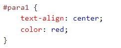
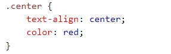
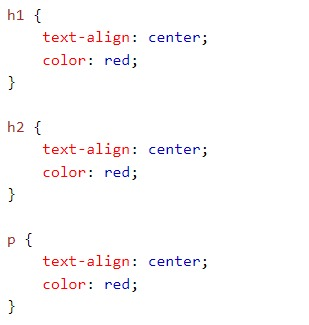
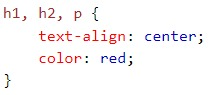
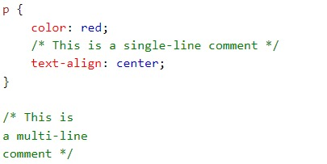

Sintaxis y Selectores
En css las sintaxis y selectores son un conjunto de reglas las cuales llevan un selectory un bloque de declaraciones, estas se usan para darle estilo a los elemntos que estan dentro d ela estructura de html.

Por ejemplo si tenemos en nuestro documento html varios elemetos p, y llamamos en nuestra hoja de estilos css ese elemento y declaramos propiedades dentro de ella, esto hace que todos nuestros elementos p obtengan esas propiedades, en pocas palabras actua como un selector universal para el elemento p.
veremos como se utilizan los selectores en css:
-
selector de elemento
Como explique en el ejemplo anterior un elemento es seleccionado como muestra la imagen:

-
Selector de ID
El selector de id en css sse inicialaiza con el simbolo (#) esta id asociada a un elemento o clase debe ser unico para seleccionar un id espcifico.
 -
Selector clase
Se inicia con . y el nombre de la clase.
 -
Agrupacion de selectores
Cuando se tienen dos o mas elementos y queremos aplicarle los mismos estilos a cada uno de esos elementos, esto se puede hacer de dos formas como veremeos en en las sigueietes imagenes:
para ahorrar lineas de codigo el desarrollador puede implementar esta Agrupacion:
 -
Comentarios
Como bien sabemmos que en todo lenguaje los comentarios son fundamentales para el lector del codigo estos le pueden ayudar a comprender que hace el codigo, o si se es programador lo ayuda para dejar instanciado parte del codigo. en CSS los comentarios se indican de esta manera /* */

Tomado de: El gran libro de HTML5, CCS3 y JavaScript